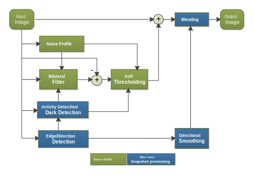
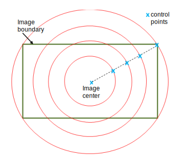

| Spectra 2xx ISP Tuning / BPS tuning | |
The Adaptive Bayer Filter (ABF) tuning module performs denoising for the Bayer
domain. Regular 2D convolution filtering deteriorates image quality, particularly when
applied on Bayer pixels. ABF can adapt its kernel based on neighboring pixel values to
reduce noise without blurring sharp edges. ABF includes a bilateral filter followed by
soft thresholding. Some additional processing is included to get high quality snapshots,
as shown in this illustration.

In general, the factory default values for ABF parameters are adequate because ABF is not the primary module for denoising. Use mild settings for the ABF filtering parameters to preserve more detail and texture. Allow the ANR, HNR, and TF modules to control the noise.
ABF processes pixels in a linear domain while other modules are in a non-linear YUV domain. Therefore, it is good to have a certain level of noise reduction in the linear domain, especially for getting high quality snapshots.
A noise profile is a 65-entry LUT that represents noise statistics for a specific sensor. The first to last entries correspond to a noise value (in terms of standard deviation) at intensity levels 0-255. The local average intensity is used to index the noise profile entry. A larger value for the Noise Stdlut Level equals a stronger denoising. Calibrate a noise profile for each sensor using the Chromatix tool. Usually the computed noise profile does not require any manual adjustment.
The Denoise Strength parameter is used to adjust denoise strength to balance between the four channels. A larger value results in a stronger noise reduction. Unless the noise level is different among the channels, do not tune this parameter.
The Edge Softness parameter, together with the noise profile, controls the strength of the bilateral filter. The greater the edge softness value, the more denoising is done. Less noise results in flatter uniform regions, less detail, and softened edges.
Noise preservation determines how much noise to retain in the soft thresholding step. These settings are helpful for removing dark artifacts, especially crosshatch patterns, but dark details are impacted. There are two parameters that affect noise preservation: Noise Prsv Base and Noise Prsv Anchor.
The ABF module has some regional parameters that must be tuned separately for different lighting conditions. An ABF region is defined by three specific nested triggers: DRC Gain Triggers, HDR AEC Triggers, and AEC Triggers. Define as many regions as you need to accomplish the preferred tuning specificity. It is important to define the regions for ABF before you begin tuning. Refer to Establishing Regions for Tuning Modules for examples and instructions.
Noise in an image field of view (FOV) is not uniformly distributed. The corner of an image often has more noise due to lens rolloff correction. Radial noise reduction (RNR) is used to uniformly distribute noise in the FOV. ABF is early in the pipeline, so Lens Shading Correction (LSC) information later in the pipeline can be used to adjust denoising.
RNR processing partitions an image into four regions using five control
points as illustrated in the following diagram.

The Radial Anchor Table, in the ABF Reserve parameters, specifies the five radial control points that are defined by the radius percentage from the center point. The first and fifth points are hard coded as the image center (0.0) and corner (1.0). Use the Chromatix tool to tune the second point and the tool generates the remaining points.
Edge softness and noise preservation can be adjusted based on radial distance. Use the Radial Noise Prsv Adj to adjust noise preservation gain and Radial Edge Softness Adj to adjust edge softness gain at each control point. A smaller gain results in a larger edge softness or smaller noise preservation, which results in more denoising. To use a stronger ABF at the image corners, program decreasing values into the radial gain adjustments.
Refer to the ABF Parameters section for more detail about how to adjust the parameter values.